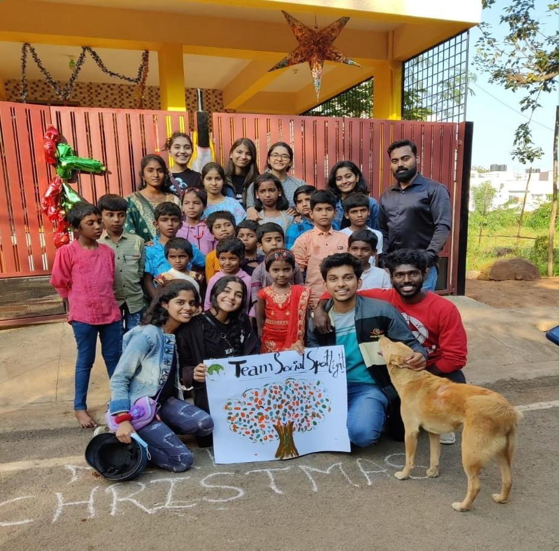
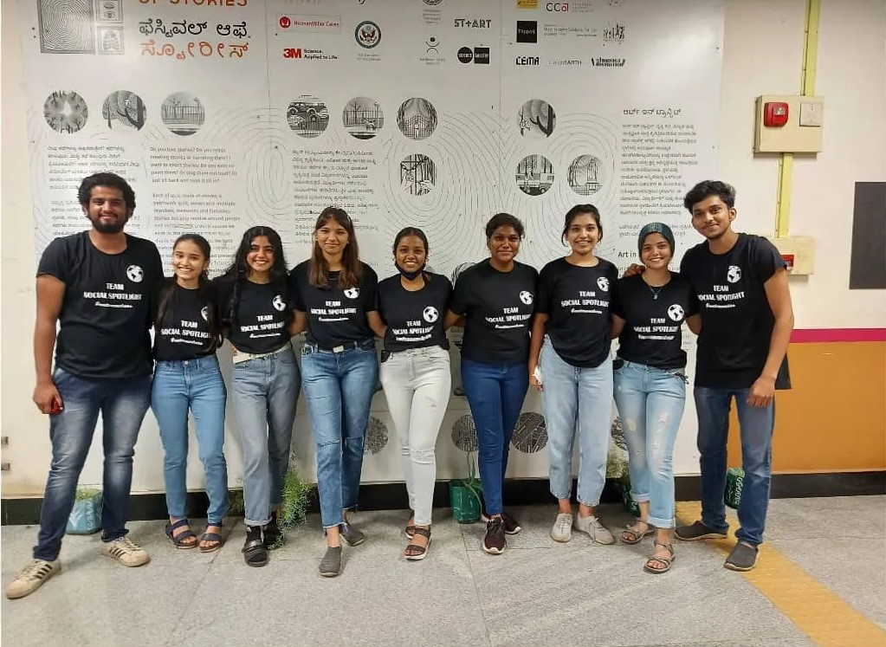
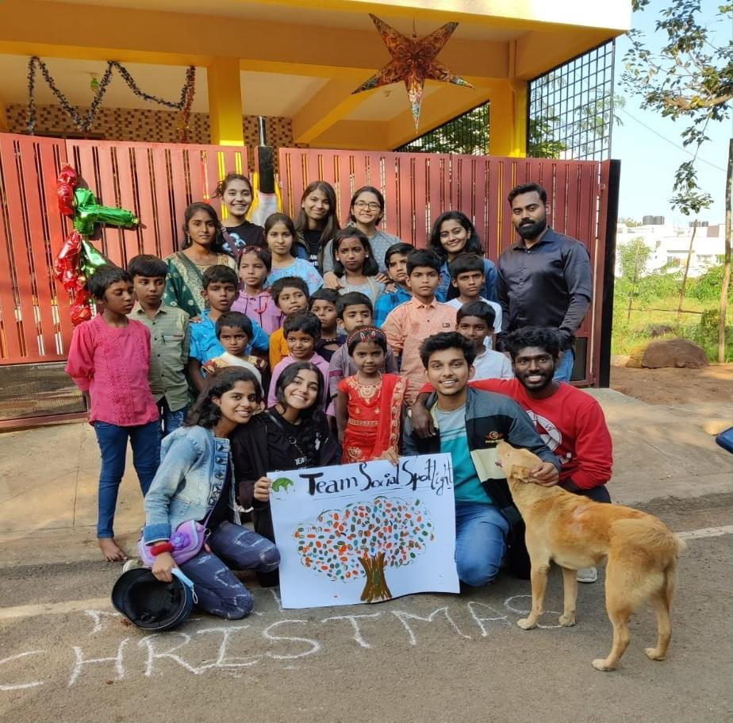
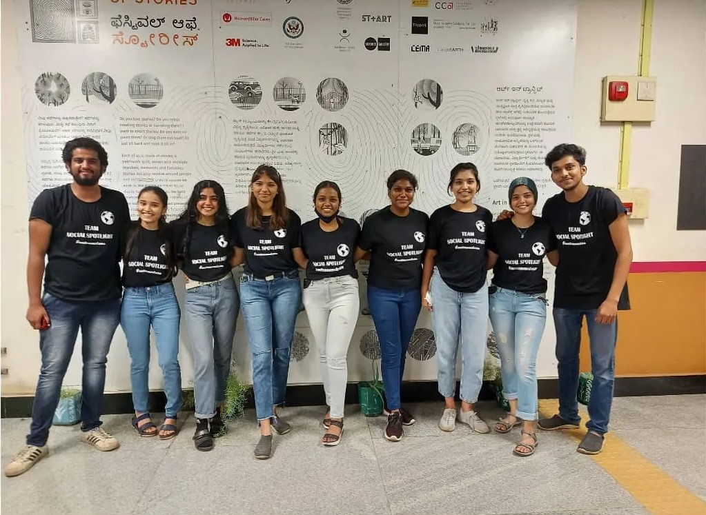

Bangalore youth team on plantation drives, art projects and driving social change
February 15, 2022 Deeply Rooted • Nitara
Ashwini Krishnan - Social Spotlight is a Bangalore-based organisation that was started in November 2019 by a group of environmentally conscious school friends, Sonesh and Shashank, which later expanded to their full friend circle. As a startup team, they aimed to undertake plantation drives and awareness projects for the Bangalore government schools. Initially, the team was of 10-11 members, namely Sonesh K Shet, Shashank Shreevathsa, Meghal Sharma, Shakshi Jain, Thejas KM, and more. The team has now grown to over 50 volunteers.
Their vision is to create a ‘social revolution’. They undertake many social activities in and around Bangalore. Here is what Sonesh, Meghal, Shashank, and Shakshi have to say about their organisation and its work.
Deeply Rooted Reporter: Can you tell us more about a few of the projects Social Spotlight has conducted in Bangalore since its initiation?
Meghal: We’ve done around five plantation drives of our own under the series of ‘Vrukshadhare’, which means ‘planting a tree’ in Sanskrit. We’ve also done five collaboration projects which included projects that throw light on the environment and social service with teams like Rotaract Bangalore west, Lions Club, Change Organisation, Water for Voiceless and other teams alike. We’ve done around six social service projects including visiting NGOs, working with children, and so on. We’ve taken up a few collaborative art projects where we go and paint walls of government schools and colleges as a part of awareness and visual learning. Apart from that, we’ve planted 400+ trees through our own services and in collaboration with others. We consider that a big win for us; it’s something that we’re really happy to share.
Their current plant sale fundraiser will help fund the team’s future projects. They have successfully sold many plants online through their Instagram page and also in Cubbon park, Bangalore.
Deeply Rooted Reporter: On average, how responsive are people to your projects? Are they generally apprehensive to take part or are they supportive of your initiatives?
Shashank: On a scale of 1 to 10, I could say 7 because of the different approaches by people. Few don’t care, some people don’t even want their place to be covered by trees and are reluctant to have trees in the opposite places to their houses. And some people are very kind, they are overwhelmed by our projects. They provide a lot of support; in the last project we did, the neighbours were so happy that we were taking some initiative to plant saplings in the park opposite their houses. They were so happy that they are watering all 110 plants regularly. That is the main motivation for us.
Deeply Rooted Reporter: On the same note, would you say that on average, city dwellers in Bangalore lack climate literacy?
Meghal: When you talk about a crowd, there are all kinds of people in the crowd. So you could say that one portion of Bangalore is very conscious and are trying to indulge practises into their daily lives that emulate the ideas of coexisting, you know, being more conscious about nature and being open to change. The other part of the crowd, though it’s not their mistake – it’s because they’re unaware – do not have the resources to be aware of what is happening around them. And in terms of educating the kids of this generation who are going to be the future, it starts with schooling, learning from the start. Back when I was in school, I remember having Environmental Science as a subject only until I think, fourth or fifth grade if I’m not wrong. After that, we did not have that subject. So it’s important that we include Environmental Science as an important subject in school. To wind up, if I had to say that Bangalore lacks climate literacy, it’s half and half. One part of the crowd is walking the sustainable path, another part is not aware of it, and the last part is reluctant to change.
Deeply Rooted Reporter: Based on your experiences in on-ground projects and research, how would you rate Bangalore as a ‘green city’?
Shashank: There are two parts to this. If I have to rate Bangalore compared to other metropolitan cities, yes. Bangalore is a great city with lots of greenery around. But again, if I had to compare it with the whole of India or the whole of Karnataka and with cities like Chandigarh, Trivandrum, Mysore, or Bhopal, then yes, it is lacking.
Deeply Rooted Reporter: Could you tell us about the back-end work that goes on for the plantation drives?
Sonesh: We research about the local plants out there and what kind of breed that particular space can help grow. For example, in Bangalore, a particular area consists of more Badami and Gulmohar trees, and these kinds of small local trees are more particular here, they grow very well. So, we do our research about the plant species, and then we take permission from a particular ward in BBMP (Bruhat Bengaluru Mahanagara Paalike) if we can plant in the decided areas, and most importantly, we have to ask the authorities if any construction would be going on in the future in that particular place at least for the next 10 years, because then our efforts would go vain.
Once the team receives the required permissions, they head to the Forest Department and take guidance about what kind of plant mixtures they can make. After this research is done, plants are purchased 2 or 3 days before the drive and placed in that location. Local workers and volunteers are called to help with on-ground work. On the day of the project, sometimes neighbours are called to plant the first few saplings. A few days later, fertilisers are added. Social Spotlight keeps following up on their projects every month.
Deeply Rooted Reporter: DR: If there’s one message you would like to send across to the readers, what would it be?
Shakshi: I would like to say that it all starts with us. So even if you are not part of our team or in any other organisation, it is better to do something to give back to nature.